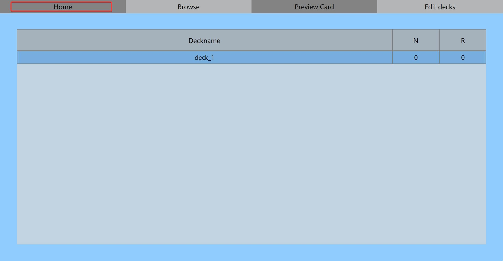
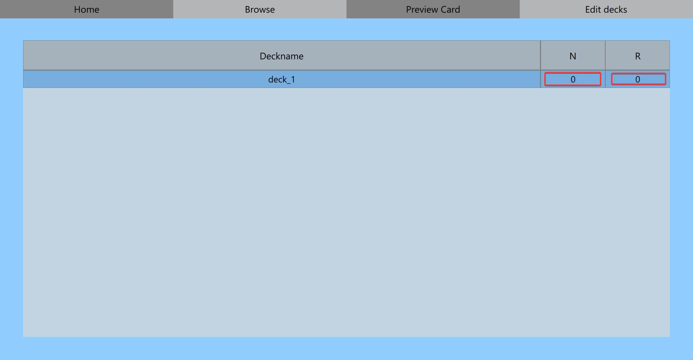

Cards are learned and reviewed from the homepage. Click the Home button to go to the homepage if you're already not there. The table at the homepage has a list of current decks and the number of new and review cards. Clicking a row will start that deck's learning or review process if there are any new or review cards that are due the current day. The default behavior is to review any review cards if there are any. Afterwards any new cards are learned. But clicking the number of new or review cards will let you control whether to review or learn first.
 